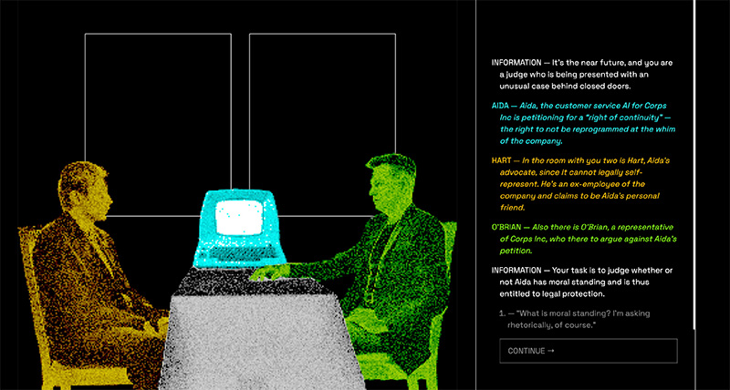

This case study was edited by Claude →Overview
This project is a choose-your-own-adventure dialogue-based narrative inspired by "Papers Please" and "Disco Elysium." Users play a judge in a near-future world evaluating whether an AI should receive legal rights. After exploring philosophical criteria for consciousness through guided dialogue, users make a final ruling and witness its consequences.
The project targets adults interested in philosophy and ethics, aiming to challenge human-centric views of consciousness and encourage reflection on how rights are granted to beings. The 15-20 minute experience draws inspiration from the Grok AI controversy and Star Trek's "The Measure of a Man" episode.
UX Research
Research began with AI-assisted philosophical content development: using Elicit to find research papers on AI moral standing, feeding them into NotebookLM for discussion, then using Claude to make academic content accessible. This process generated the core dialogue content.
Comparative analysis included web-based narratives like "17776" and "Homestuck," which inspired pushing beyond typical web UI patterns. Initially conceived like Papers Please with document-based interactions, the format evolved to Disco Elysium's dialogue trees when research showed abstract concepts communicated better through conversation-based formats.
Disco Elysium's UI research proved particularly influential, demonstrating how strategic layout and line-by-line presentation maintains engagement despite heavy text content.
Visual Design
The design uses Space Grotesk font (chosen over Syne Mono and Courier Prime for optimal readability) and a limited palette of black, white, bright cyan, bright green, and orange-yellow. This retro-futuristic aesthetic references early computer limitations while creating compelling old-new contrasts that mirror the project's themes.
Colors serve narrative functions: white represents the player, green identifies O'Brian (anti-AI rights), yellow represents Hart (pro-AI rights), and cyan signifies Aida (the AI). This system appears in both the pixelated illustration and dialogue text for clear character identification.
Text formatting combines stage play and Disco Elysium conventions: character names in caps with em dashes, spoken dialogue in quotes, action dialogue in italics, and hanging indents for easy scanning.
User Interface
The interface presents dialogue as a vertically scrollable column with line-by-line revelation controlled by a "continue" button, preventing information overload while accommodating varying reading speeds. The two-column layout balances text with visual relief through the central illustration.
Choice selection requires clicking and confirming via continue button, preventing accidents while maintaining engagement. Dynamic dialogue options change contextually based on conversation location. Users must visit all four main topics before accessing the final ruling, ensuring comprehensive engagement while preserving exploration freedom.
Revisions
User testing with a design student revealed effective color-coding for character identification and clear spoken/action dialogue distinction. However, users could skip to the ending without exploring content, prompting the four-topic requirement implementation.
The project expanded from a technical demo to 1,400 lines of dialogue between testing and completion. Based on feedback, action dialogue formatting was refined to italics for better visual separation.
Summary
This project provided deep appreciation for video game development complexity — creating a 15-20 minute experience required 1,400 lines of JSON for the dialogue, highlighting the massive scope of full games like Disco Elysium.
The greatest achievement was successfully recreating elements from a favorite game while tackling meaningful philosophical content. During final presentations, audience members noted they'd never considered AI rights before, fulfilling the project's goal of introducing crucial ethical considerations.
The primary challenge was time management, with extensive concept development compressing implementation timelines. Most rewarding was creating an experience that makes abstract philosophical concepts tangible and personally relevant, demonstrating interactive media's power to encourage critical thinking about increasingly important AI ethics topics.